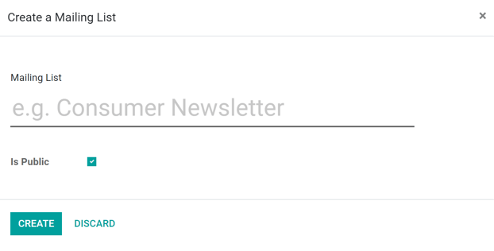
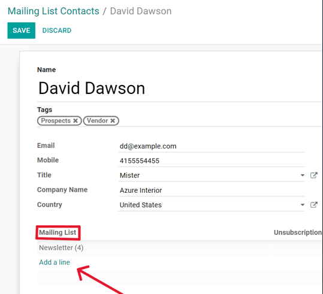
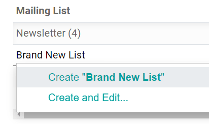
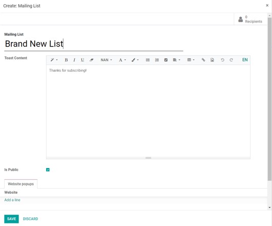

Listas de correo¶
Las listas de correo son importantes por varias razones, por ejemplo, pueden proporcionar leads valiosos a los equipos de ventas, ayudar a que se comunique con los participantes de grupos focales y contactar a los consumidores directamente para que proporcionen comentarios útiles, entre muchas otras.
Crear listas de correo¶
Para crear una lista de correo en la aplicación Marketing por correo electrónico vaya a .
En la ventana emergente, proporcione un nombre a la lista de correo y seleccione si es pública en la casilla correspondiente.
La opción es pública permite que los destinatarios accedan a la lista de correo en la página para cancelar su suscripción o actualizar sus preferencias.
Después de configurar esas opciones, haga clic en el botón correspondiente para crear la lista de correo. Odoo la agregará en automático a la página listas de correo .
Agregar contactos a una lista de correos¶
Después de crear una lista de correo (y agregarla al tablero de listas de correo), haga clic en la lista de correo deseada para agregar contactos a la lista.
Al hacer clic en la lista de correo que desee, abrirá una página por separado de Contactos de la lista de correo en donde puede agregar contactos a esta lita en específico haciendo clic en Crear, y agregando la información directamente en un nuevo formulario detallado del contacto.
O, mientras está en la aplicación vaya a . De esta forma, se abrirá una página por separado con todos los contactos de la listas de correo de la base de datos.
Desde aquí, haga clic en Crear, y agregue un contacto siguiendo los pasos anteriores. O, haga clic en el icono de Importar (ubicado del lado derecho del botón Crear) para importar contactos a la base de datos.
Una vez que los contactos estén en la base de datos, haga clic en el formulario detallado del contacto deseado y agregue la lista de correo preferida en la pestaña Lista de correo (en la parte inferior del formulario detallado del contacto) haciendo clic en Agregar línea, y seleccionando la lista de correo deseada. Puede agregar varias listas de correo a un solo formulario de contacto.
Crear una nueva lista de correo desde un formulario detallado de contacto¶
Para crear una lista de coreo desde el formulario de un contacto, haga clic en Agregar una línea, y escriba el nombre de una lista de correo en el campo que aparecerá. Luego, seleccione Crear o Crear y Editar….
La opción Crear le permite crear rápidamente la lista de correo en el formulario detallado del contacto y puede configurarla después. La opción Crear y editar… crea la lista de correo y abre una ventana emergente en donde puede configurar dicha lista de inmediato.
